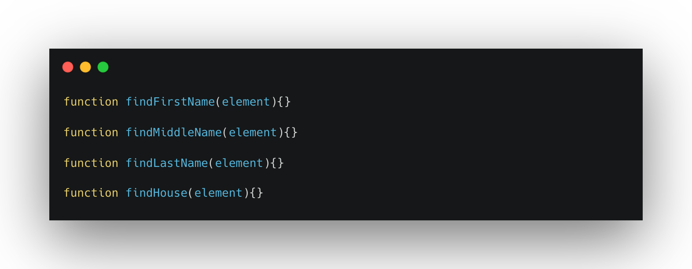
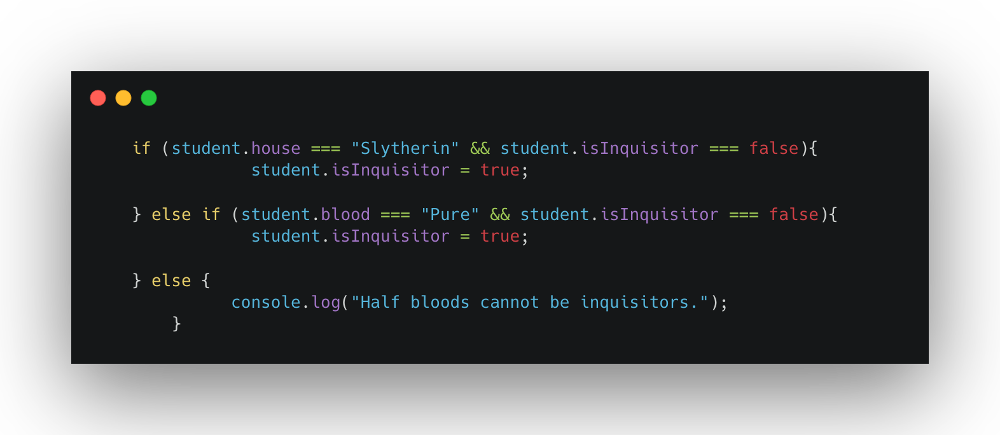

HACKING HOGWARTS
This is the first big KEA project of the third semester. Pure vanilla JavaScript. The main idea behind this was to create a dashboard so Hogwart's administrator could have an overlook of the students.

Official requirements:
- Fetch and clean the data from the JSON files
- Be able to filter students by house
- Inquisitorial squad based on blood type condition
- Two prefects per house max
- Filter between expelled and non expelled students
- Hack yourself into the student's list using the keyboard
FETCH&CLEAN DATA
I created a function for each piece of information from the student: name, middle name, last name, house, and blood. This made my code reusable, easier to read and to maintain.
FILTER BY HOUSE
By using the filter method, I was able to filter through the entire array of student objects and display only the ones that belonged to the selected house.
INQUISITOR SQUAD
Students can only join the inquisitor's squad if they belong to Slytherin or if they're "pure blood". With this in mind, I developed the logic to make it work.
HACKING THE SYSTEM
The system can be hacked by pressing the key "5". This will change the background image, inject a new student to the list and make him non-expellable.

See the end result here.